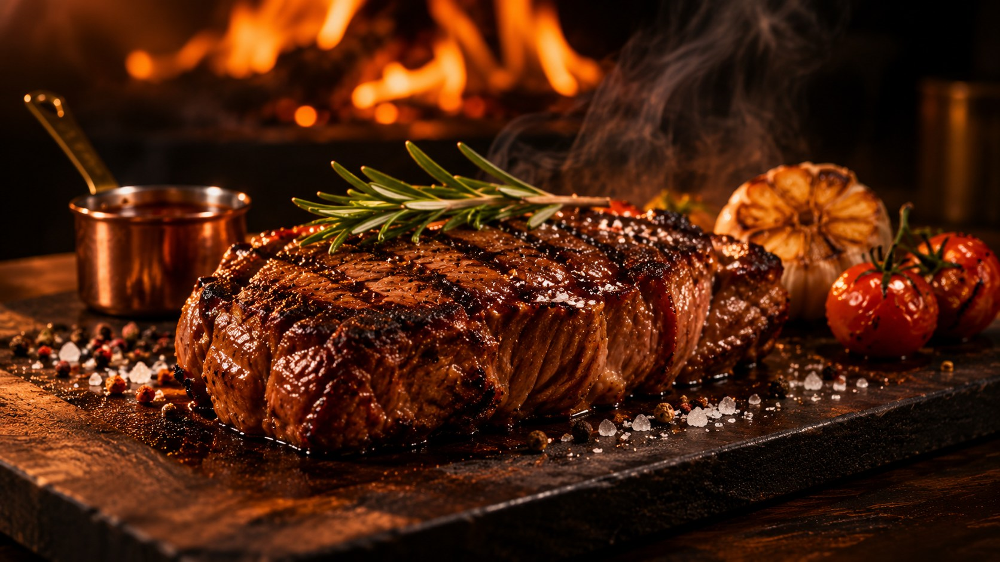
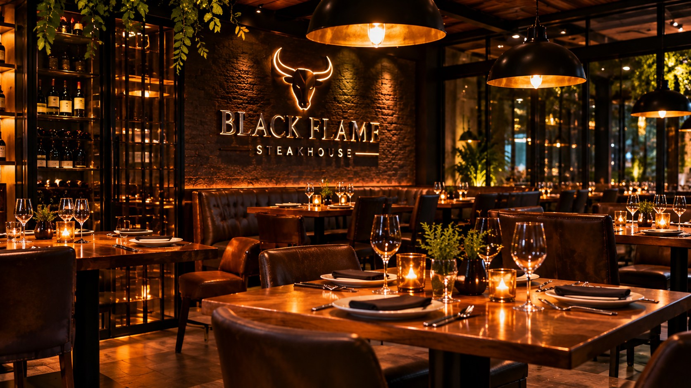
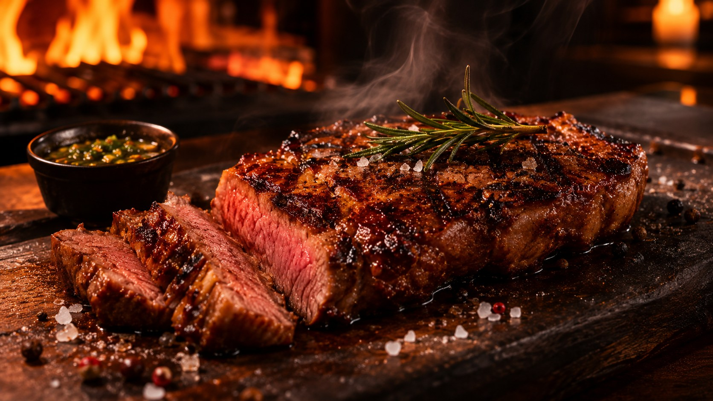
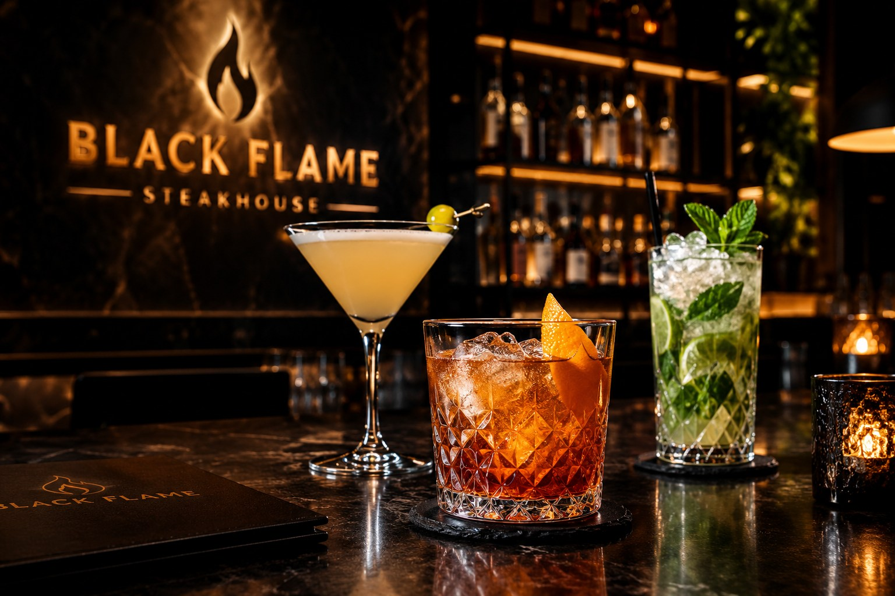
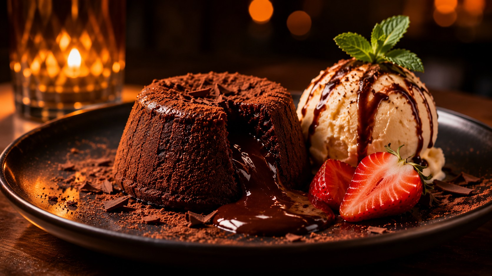
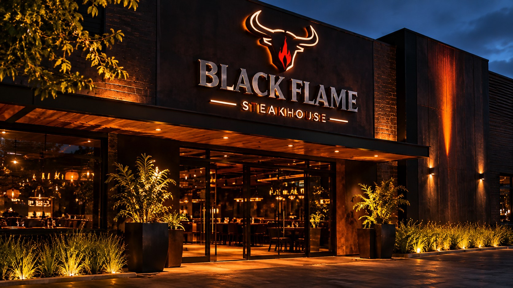

Tomahawk na brasa
Osso longo, crosta tostada e sal de parrilla.
Steakhouse · Projeto conceitual
Carne de respeito. Brasa viva. Tempo no ponto certo.

BrasaBLACK FLAME nasceu de uma ideia simples: deixar o fogo fazer o que sabe. A carne chega à mesa depois de uma escolha cuidadosa, calor intenso e o tempo necessário para cada corte.
Uma steakhouse imaginada para quem gosta de saber o que está no prato — e prefere que a conversa dure mais que a refeição.
O jeito da casa
MISSÃO DA CASA
Servir comida feita com atenção, do primeiro carvão ao último gole.
O que orienta a casa
Brasa, salão, corte, balcão e sobremesa.
Cinco cenas para abrir o apetite.




Um bom jantar não precisa de cerimônia. Precisa de cuidado em cada etapa.
O corte chega à cozinha com procedência e características próprias. O preparo respeita as duas.
Calor direto para selar. Distância e tempo para chegar ao ponto. O fogo não se apressa.
Um breve descanso, acompanhamentos sem excesso e espaço para dividir o centro da conversa.
“A técnica acende o caminho.
O fogo termina a frase.”
Nomes e funções inventados para este conceito; sem credenciais reais.
Depoimentos inventados para apresentar este conceito. Não representam clientes ou avaliações reais.
O ancho tinha aquela crosta delicada e ainda estava suculento. A conversa foi longe; ninguém estava com pressa.
Marina A. Personagem fictícia
A costela se desmanchava sem perder o sabor da brasa. Pedi mais um drink só para prolongar a noite.
Caio R. Personagem fictício
Gostei de ver o cuidado nos detalhes, sem formalidade demais. A sobremesa fechou a noite do jeito certo.
Lívia M. Personagem fictícia
Preencha os campos abaixo para ver uma confirmação apenas nesta página. Nenhum dado é enviado ou armazenado.
Não. BLACK FLAME é uma marca inteiramente fictícia, criada para demonstrar um projeto de site. Cardápio e preços são ilustrativos.
O menu apresentado é demonstrativo e não representa um estabelecimento em funcionamento. Nenhuma disponibilidade real está sendo anunciada.
O endereço exibido neste projeto é ilustrativo. Não há uma unidade física da BLACK FLAME.
Faça uma reserva de demonstração. A confirmação aparece aqui mesmo; nada será enviado.
Rua das Brasas, 125 · Centro
São Paulo — SP
(11) 4000-0000